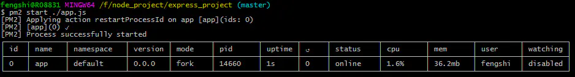
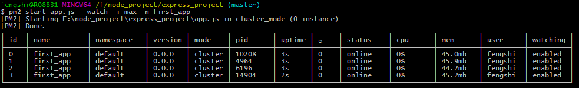
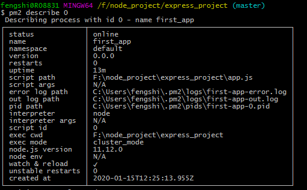
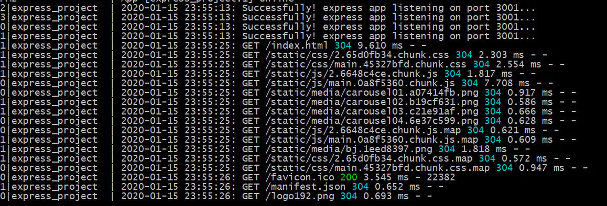
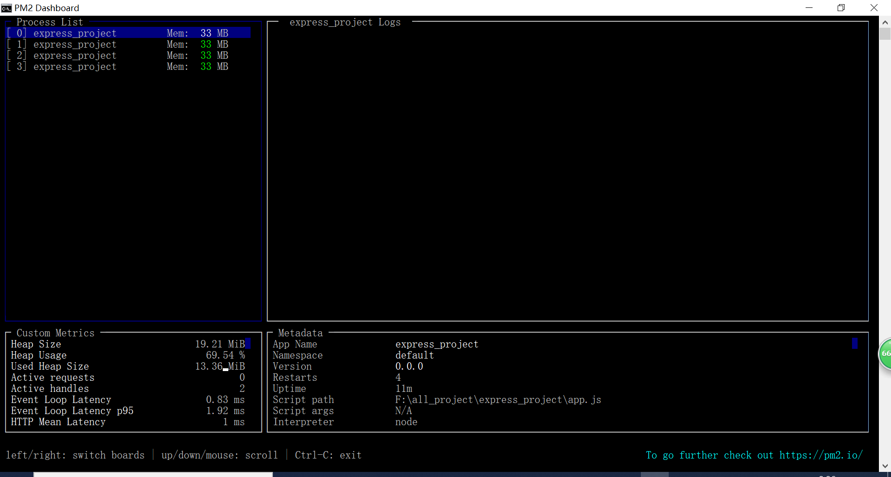
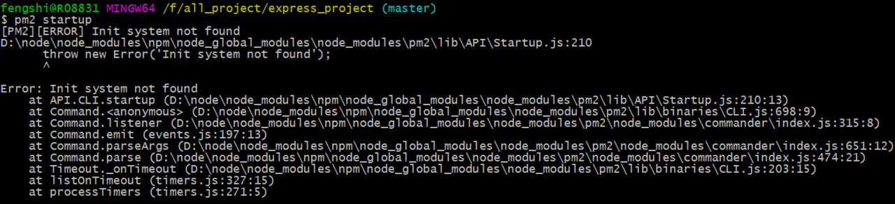

pm2 工具
前言
pm2 是 node 进程管理工具，可以利用它来简化很多 node 应用管理的繁琐任务，如性能监控、自动重启、负载均衡等，因为在工作中遇到服务器重启后，需要一个个去重新启动每个服务，这样不仅繁琐、效率低，而且容易遗忘开启一些服务。
内容
一、安装&目录
1.1 运行以下命令进行全局安装
npm install -g pm2
1.2 安装完之后，会自动创建以下目录：
$HOME/.pm2/logs // 包括所有应用的日志
$HOME/.pm2/pids // 包括所有应用的 pids
$HOME/.pm2/dump.pm2 // 开机自启动配置
$HOME/.pm2/pm2.log // pm2 日志
$HOME/.pm2/pm2.pid // pm2 pid
2
3
4
5
6
二、常用命令
2.1 启动命令
pm2 start app.js
启动成功后，我们对应可以看到启动的服务的一些信息，如下所示：

2.2 命令行参数
我们可以在最基本的启动命令后面，添加一些参数选项，去满足我们的需求，常用的参数选项如下所示：
--watch：监听应用目录的变化，一旦发生变化，自动重启。-i or --instance：启用多少个实例，可用于负载均衡，如果-i 0 或或者-i max，则根据当前机器核数确定实例数目。--ingore-watch：排队监听的目录或文件，可以是特定的文件名，也可以是与此正则。-n or --name：应用的名称，查看应用信息的时候可以用到。-o or --output path：标准输出日志文件的路径。-e or --error path：错误输出日志文件的路径
pm2 start app.js --watch -i max -n first_app
启动成功后的截图如下，我们通过截图可以看到启动的应用名称变为 first_app，然后启动四个进程，说明我们在启动命令后面添加的参数已经起作用。

2.3 重启命令
pm2 restart app.js
2.4 停止命令
停止特定的应用，可以通过 pm2 list 先获取应用的名字或者进程的 id，然后再调用以下命令停止相应的应用；
pm2 stop app_name | app_id
如果需要停止全部的应用，则使用以下命令：
pm2 stop all
2.5 删除命令
删除特定的应用，可以通过 pm2 list 先获取应用的名字或者
pm2 delete app_name | app_id
如果需要删除全部的应用，则使用以下命令：
pm2 delete all
2.6 查看有哪些进程
pm2 list
2.7 查看某个进程的信息
pm2 descripe app_name | app_id
相应的进程信息输出如下所示：

三、配置文件
如果我们使用命令行参数定义一些选项，那么每次启动进程时，都需要敲上一大堆的命令，非常繁琐；所以我们可以使用配置文件来将命令行参数进行配置，配置文件里的配置项跟命令行参数是基本一致的；如下所示，我们在项目 中添加 pm2 的配置文件 pm2.json ，然后在 package.json 文件中配置启动命令 "pm2": "pm2 start pm2.json" ，这样我们只需要运行 npm run pm2 就可以使用 pm2 启动我们的 express 项目，并且相关运行参数直接在 pm2.json 中配置好了。
{
"apps":{
"name": "project", // 项目名
"script":"app.js", // 执行文件
"cwd":"./", // 根目录
"args":"", // 传递给脚本的参数
"interpreter":"", // 指定的脚本解释器
"interpreter_args":"", // 传递给解释器的参数
"watch":true, // 是否监听文件变动然后重启
"ignore_watch": [ // 不用监听的文件
"node_modules",
"public"
],
"exec_mode": "cluster_mode" // 应用启动模式，支持fork和cluster模式
"instances": "max" //
}
}
2
3
4
5
6
7
8
9
10
11
12
13
14
15
16
17
四、高阶应用
4.1 负载均衡
可以使用-i 参数配置集群数，实现负载均衡，相关命令以下，可以查看官网章节；
pm2 start app.js -i 3 // 开启三个进程
pm2 start app.js -i max // 根据机器CPU核器，开启对应数目的进程
2
3
4.2 日志查看
我们可以通过打开日志文件查看日志外，还可以通过 pm2 logs 来查看裡日志，这点有对于线上问题排查，日志查看命令如下：
pm2 logs
则我们可以在命令窗口实时看到日志输出：

4.3 监控
我们可以使用以下命令，查看当前通过 pm2 运行的进程的状态：
pm2 monit
动态监控界面如下所示：

4.4 内存超过使用上限自动重启
我们可以使用 --max-memory-restart 参数来限制内存使用上限，当超过使用内存上限后自动重启：
pm2 start app.js --max-memory-restart 100M
4.5 开机自启动
在 linux 中，设置开机自动启动，只需要执行以下两个步骤：
- 运行
pm2 startup，即在/etc/init.d目录下生成pm2-root的启动脚本，且自动将pm2-root设为服务； - 运行
pm2 save，会将当前 pm2 所运行的应用保存在/root/.pm2/dump.pm2下，当开机重启时，运行pm2-root服务脚本，并且到/root/.pm2/dump.pm2下读取应用并启动；
但在 windows 中运行 pm2 startup 时，会报以下错误，因为其不适合 windows 系统；

我们需要额外安装其它库，如下所示：
npm install pm2-windows-startup -g
pm2-startup install
2
然后我们只需要运行以下保存命令，就可以将现在正在运行的服务添加到开机自启动命令中；后面即服务器开机重启，也会将我们保存的服务自动重启；
pm2 save
参考资料
联系作者
平凡世界，贵在坚持。